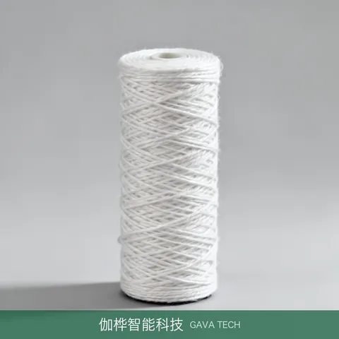

GAVALiquid Filtration · Cartridges
Wound Filter Cartridge
Model: JT-WOUND
| Specifications | PP/cotton wound, 1-100μm, 10-40 inch; common lengths 250mm / 500mm also available |
| Key Features | Depth filtration, high dirt-holding capacity |
| Typical Applications | Chemical / water treatment |
| Supply Status | Inquiry available — specification selection and quotation provided, subject to confirmation by both parties |
| Customization | Made-to-order, sampling and OEM supported. MOQ and lead time on request. Products are supplied through our own, affiliated and partner supply network; the specific supply arrangement is confirmed in the quotation and contract. |